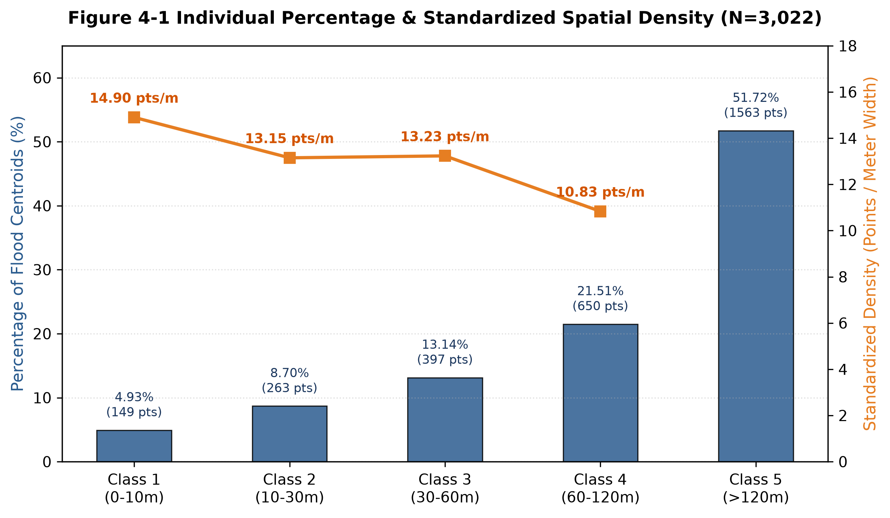
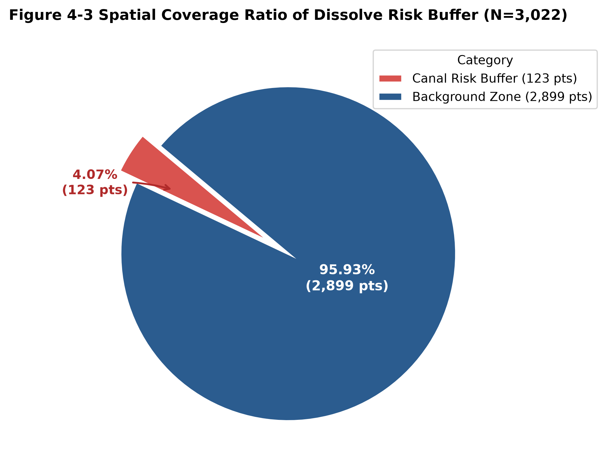

Chapter 4 — Empirical Analysis and Discussion#
“During extreme rainfall, surface flooding can reveal—in a new form—the concealed historical boundaries of former waterways.”
4.1 Distance Decay: Higher Band-width-normalized Counts Near Historic Waterways#
To examine the spatial relationship between flood-area centroids and historic waterways, the geometric distance from each point to the nearest historic waterway was divided into five classes based on the scale of Taipei’s alleys and urban blocks:
Class 1 (0–10 m): Roads and first-row buildings directly corresponding to filled canal corridors
Class 2 (10–30 m): The first layer of alleys and blocks beyond the first row of buildings
Class 3 (30–60 m): Adjacent blocks across neighboring alleys
Class 4 (60–120 m): An outer transition zone where terrain begins to change
Class 5 (>120 m): Background areas beyond the proposed zone of pronounced microtopographic influence
Why raw point counts are not compared directly#
Class 4 contains 650 points, more than the 149 points in Class 1. However, Class 4 is 60 m wide—six times the width of Class 1. Comparing the raw counts alone would therefore be misleading.
To adjust for unequal radial widths, the study calculates an exploratory band-width-normalized point count (centroids per metre of distance-band width):
Class 1 (0–10 m): 14.90 points/m
Class 2 (10–30 m): 13.15 points/m
Class 3 (30–60 m): 13.23 points/m
Class 4 (60–120 m): 10.83 points/m

Figure 4-1. Share of flood-area centroids and band-width-normalized point count by distance from historic waterways (N = 3,022).
The normalized counts show an overall distance-decay pattern: the number of flood-area centroids per metre of band width generally decreases with distance from historic waterways. Because this calculation does not divide by the actual land area of each band, it should not be interpreted as conventional spatial density. Although former irrigation canals have been covered and redeveloped as roads and residential areas, associated low-lying microtopographic corridors may continue to guide surface runoff.
4.2 Spatial Significance: Plain-constrained Monte Carlo Simulation#
To test whether the proximity of the flood-area centroids to historic waterways could arise by chance, the study uses a plain-constrained Monte Carlo simulation. Including the mountains of southern Wenshan or the eastern slopes of Xinyi would inflate distances because steep hillsides are less prone to standing water and are generally farther from canals on the plain. The simulation therefore excludes terrain with slopes greater than 30% and samples only the low-lying plain within Da’an, Songshan, Xinyi, and Wenshan.
For each of 1,000 iterations, 3,022 points were distributed randomly across the eligible plain and their median distance to a historic waterway was calculated:
Expected median under the random model: approximately 203.68 m (\(SD = 3.43\) m)
Observed median for flood-area centroids: 125.72 m

Figure 4-2. Plain-constrained Monte Carlo test of spatial proximity to historic waterways (N = 3,022).
None of the 1,000 simulated median distances was as small as the observed value. Using the recommended finite-simulation correction, \(p = (r+1)/(B+1)\), where \(r=0\) simulations were at least as extreme and \(B=1{,}000\), gives a one-sided Monte Carlo estimate of \(p = 1/1001 \approx 0.001\). Under this model and study boundary, the flood-area centroids are significantly closer to historic waterways than expected from complete spatial randomness.
4.3 Flooding Near Historic Waterways and Multiple Urban Drivers#
The dissolved 15 m, 30 m, and 50 m waterway buffers contain 4.07% (123) of the flood-area centroids; the remaining 95.93% (2,899) lie in the wider background area.

Figure 4-3. Distribution of flood-area centroids inside and outside the dissolved waterway risk buffers (N = 3,022).
These results offer two complementary perspectives:
Observed overlap with the buffered corridors
The buffers contain 123 of the 3,022 flood-area centroids (4.07%). This establishes the amount of overlap between the mapped flood areas and the selected historic-waterway buffers. It does not, by itself, show that flooding is four times denser or four times more likely near historic waterways. Such a comparison requires the land area inside and outside the non-overlapping buffers and should be reported as centroids per km², ideally with an uncertainty estimate or statistical test.Citywide complexity
At the citywide scale, 95.93% of the points lie outside these narrowly defined buffers. Urban flooding cannot be attributed to a single variable. Historic microtopography may provide physical collection corridors, but impervious surfaces, short-duration rainfall that exceeds design thresholds, limits in the underground stormwater network, and hillslope runoff at locations such as the foot of the Wenshan slopes interact across space and time to produce a complex risk landscape.